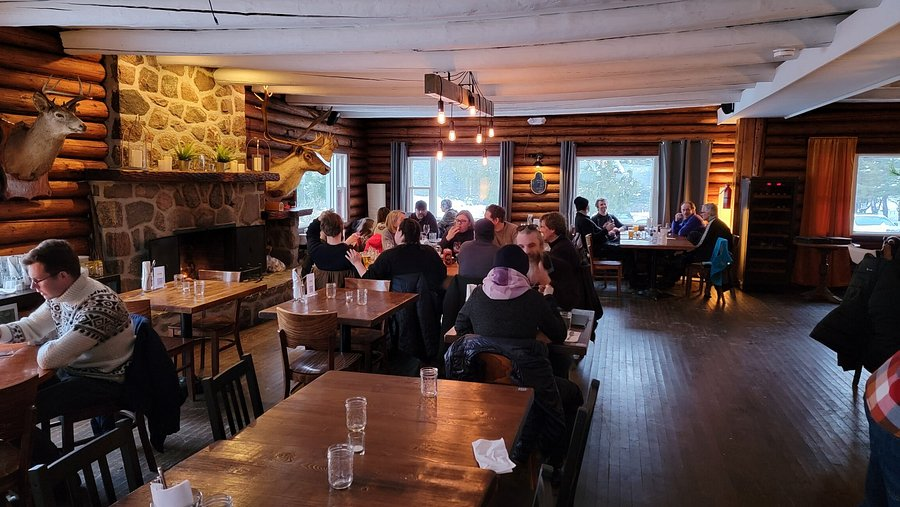

Cas concrets
Des exemples qui parlent
Cliquez sur un scénario pour voir la différence.
Entrepreneur en construction
Soumissions et suivis de chantierAvant
- Soumissions faites manuellement dans Word
- Suivi des chantiers en cours dans un cahier
- Relances clients oubliées ou faites trop tard
- Aucune vue d'ensemble sur les projets actifs
Après
- Formulaire en ligne → soumission PDF générée en 30 secondes
- Tableau de bord mis à jour automatiquement
- Relances envoyées automatiquement à J+3 et J+7
- Vue complète de tous vos chantiers en temps réel

Restaurateur
Réservations et gestion des commandesAvant
- Réservations par téléphone seulement — vous manquez des appels
- Rappels de réservation envoyés à la main
- Liste d'attente gérée dans un carnet
- Statistiques de vente compilées manuellement
Après
- Réservations en ligne 24h/24 depuis votre site web
- Rappel automatique 24h avant par courriel ou SMS
- Liste d'attente numérique avec notification automatique
- Rapport hebdomadaire envoyé par courriel le lundi matin

Commerce de détail
Inventaire et commandes fournisseursAvant
- Inventaire compté à la main chaque semaine
- Commandes fournisseurs passées au feeling
- Produits en rupture découverts trop tard
- Aucun historique de vente facilement accessible
Après
- Inventaire mis à jour en temps réel à chaque vente
- Alerte automatique quand un produit atteint le seuil minimum
- Rapport de tendance pour savoir quoi commander
- Historique complet consultable en quelques clics
Professionnel de service
Prise de rendez-vous et facturationAvant
- Rendez-vous pris par téléphone et notés dans un agenda papier
- Factures créées manuellement dans Word
- Suivi des paiements dans un tableur Excel
- Rappels de suivi jamais envoyés faute de temps
Après
- Page de réservation en ligne connectée à votre agenda
- Facture générée automatiquement après chaque rendez-vous
- Alerte automatique pour les paiements en retard
- Courriel de suivi envoyé automatiquement 3 jours après